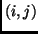
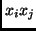
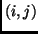
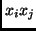

Next: Multivariate phd
Up: Methods available
Previous: Principal Hessian direction
Li (1992) proposed an alternative method of estimating the Hessian matrix
based on quadratic regression, as follows: (1) fit the ols regression of
the response on the full second-order model based on all  predictors; (2)
set
predictors; (2)
set  to be the
to be the  matrix whose  element is the
estimated coefficient of . Given this estimate of
matrix whose  element is the
estimated coefficient of . Given this estimate of  , proceed as
with other phd methods.
, proceed as
with other phd methods.
Sandy Weisberg
2002-01-10